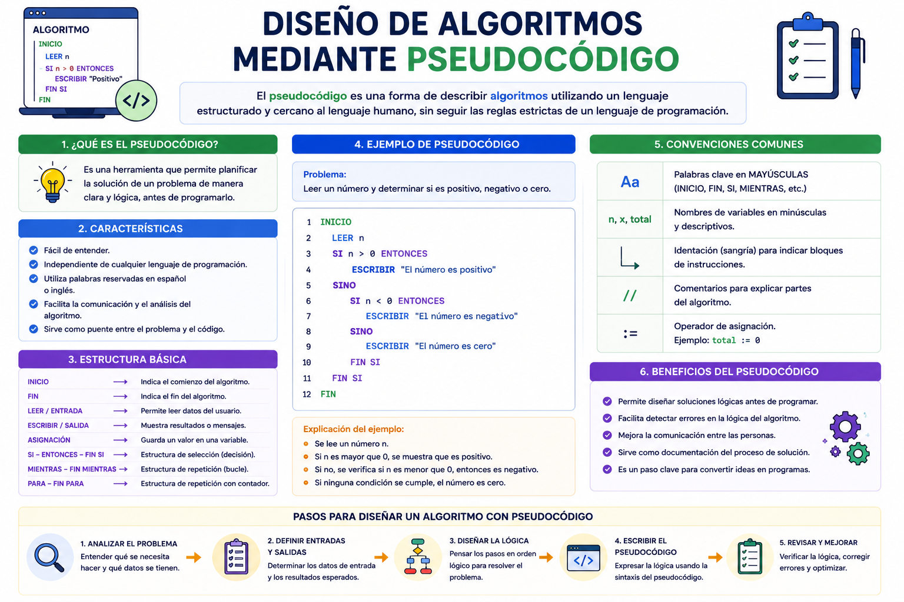

Antes de filmar una película de ciencia ficción de gran presupuesto, los directores escriben un guion detallado en papel en su propio idioma; no van directo a grabar con las cámaras. En programación ocurre lo mismo: el pseudocódigo es ese borrador o guion escrito en español técnico que te permite diseñar la lógica de un software complejo sin preocuparte por las reglas estrictas de un lenguaje como Java o C++. Permite estructurar la mente antes de programar en los servidores reales.
⚠️ Debes visualizar el video completo sin adelantar para desbloquear la evaluación.
Material audiovisual adaptado con fines estrictamente educativos. Créditos del autor: Kiko Palomares.

El pseudocódigo es un lenguaje de especificación de algoritmos que utiliza palabras clave en lenguaje humano (como español) mezcladas con estructuras sintácticas de programación para describir el flujo lógico de un programa.
¿Cuál es la analogía utilizada en la lección para describir el pseudocódigo?
¿Qué es técnicamente el pseudocódigo según la lectura?
¿Por qué se afirma que el pseudocódigo carece de rigidez sintáctica?
¿Qué son las "Palabras Reservadas" mencionadas en las ideas clave?
¿Cuál es la principal ventaja operativa de diseñar un algoritmo con pseudocódigo antes de ir a la computadora?
Si un pseudocódigo incluye la instrucción "Leer X", ¿qué operación se está indicando al procesador?
¿Qué palabra reservada se utiliza típicamente en pseudocódigo para indicarle al sistema que debe mostrar un resultado en pantalla?
¿Por qué el pseudocódigo es considerado un lenguaje "independiente"?
¿Qué pasa si un programador comete un error de lógica en su pseudocódigo?
¿Cuál de las siguientes estructuras representa una secuencia correcta de palabras reservadas básicas en un pseudocódigo estructurado?